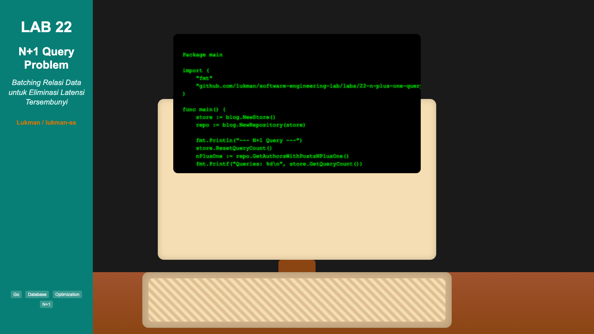

Software Engineering Lab 22 • Karya Lukman / lukman-ss

Dalam rekayasa perangkat lunak modern, performa sistem basis data relasional sering kali menjadi faktor penentu kelangsungan hidup sebuah aplikasi web. Ketika aplikasi mengalami lonjakan beban pengguna, lapisan data access kerap menjadi titik runtuh pertama. Banyak insinyur perangkat lunak menghabiskan waktu berjam-jam mengoptimasi indeks basis data, menulis ulang kueri SQL yang rumit, atau menambah kapasitas komputasi CPU pada server basis data. Namun, terdapat satu kelas masalah performa yang tidak dapat diselesaikan melalui indexing dan sering kali sama sekali tidak terdeteksi oleh perkakas pemantauan konvensional: N+1 Query Problem.
N+1 query problem adalah sebuah anti-pattern arsitektural yang terjadi ketika sebuah aplikasi mengambil koleksi data induk menggunakan satu kueri awal (1), kemudian untuk setiap entitas yang ditemukan dalam koleksi tersebut, aplikasi mengeksekusi satu kueri terpisah secara berulang di dalam iterasi perulangan (N) guna mengambil data relasional anak. Akibatnya, alih-alih mengeksekusi kueri dengan jumlah yang efisien, sistem justru mengeksekusi total 1 + N kueri ke basis data. Jika koleksi data induk berisi 100 entitas, sistem akan menjalankan 101 kueri; jika berisi 10.000 entitas, sistem akan membanjiri basis data dengan 10.001 kueri terpisah.
Yang menjadikan masalah ini sangat berbahaya dalam lanskap operasional adalah karakteristiknya yang invisible until it hurts (tidak kasat mata hingga menimbulkan kegagalan fatal). Pada lingkungan pengembangan lokal (development environment), pengembang biasanya hanya menguji kode menggunakan basis data kecil dengan 3 hingga 5 entitas contoh. Eksekusi 4 hingga 6 kueri individual yang masing-masing selesai dalam 0,2 milidetik akan tampak berjalan instan. Halaman web memuat dalam sekejap, dan tes integrasi lokal lulus dengan mulus. Namun, ketika kode yang sama diluncurkan ke lingkungan produksi dengan ribuan data nyata, degradasi latensi terjadi secara linear dan eksponensial. Akumulasi waktu bolak-balik jaringan (network round-trip time), overhead serialisasi protokol koneksi, serta saturasi connection pool secara tiba-tiba melumpuhkan layanan aplikasi.
Melalui Software Engineering Lab 22, kita melakukan eksplorasi mendalam terhadap mekanisme fundamental terbentuknya anti-pattern N+1 query problem menggunakan bahasa pemrograman Go. Lab ini mendemonstrasikan bagaimana kueri naif di dalam iterasi loop menimbulkan overhead eksekusi, serta membuktikan secara deterministik bagaimana pendekatan batched eager loading mampu mereduksi kompleksitas pemanggilan data dari $O(N)$ linear menjadi $O(1)$ konstan tanpa mengubah semantik data domain.
Untuk memahami mengapa N+1 query problem begitu merusak, kita perlu membedah dua fenomena teknis utama: akumulasi latensi jaringan (network round-trip latency) dan titik buta perkakas pemantauan basis data (slow query logs blind spot).
Dalam praktik pengelolaan basis data relasional (seperti PostgreSQL, MySQL, atau Oracle), administrator basis data (DBA) mengandalkan konfigurasi slow query log untuk menangkap kueri bermasalah. Konfigurasi umum menetapkan ambang batas durasi eksekusi, misalnya log_min_duration_statement = 500ms atau long_query_time = 1 detik. Filosofi di balik aturan ini sederhana: temukan kueri yang lambat dan tambahkan indeks yang tepat.
Namun, dalam kasus N+1 query problem, setiap kueri anak yang dieksekusi di dalam perulangan biasanya adalah kueri sederhana yang mencari data berdasarkan kunci asing terindeks (indexed foreign key):
SELECT id, author_id, title FROM posts WHERE author_id = 42;Karena kueri ini menggunakan indeks pohon B-tree pada kolom author_id, mesin basis data dapat menemukan baris yang relevan dan mengembalikan hasil dalam durasi 0,1 hingga 0,3 milidetik. Akibatnya:
Mari kita hitung secara matematis overhead yang terjadi pada lingkungan cloud modern. Meskipun server aplikasi dan kluster basis data ditempatkan pada Availability Zone (AZ) yang sama, latensi bolak-balik jaringan fisik (RTT) antar kontainer biasanya berkisar antara 0,4 ms hingga 0,8 ms. Misalkan sebuah endpoint GET /api/work-orders mengambil 200 data perintah kerja beserta item terkaitnya.
Jika menggunakan pendekatan N+1:
200 × 0,7 ms = 140 ms murni untuk satu request sederhana.Angka 140 ms tersebut tampak masih dapat ditoleransi untuk satu pengguna tunggal. Namun, apa yang terjadi ketika sistem menerima 50 permintaan bersamaan (concurrent requests)? Sebanyak 50 × 201 = 10.050 kueri SQL akan ditembakkan ke basis data dalam rentang waktu beberapa detik! Setiap thread aplikasi akan menahan satu slot koneksi dari connection pool selama menjalankan 201 kueri secara berurutan. Akibatnya, connection pool akan terkuras habis (exhaustion), permintaan baru akan masuk ke antrean tunggu (connection queue wait), timeout berantai akan terjadi, dan seluruh sistem mengalami cascading failure.
Untuk mempelajari dan memverifikasi fenomena ini secara terkendali tanpa bergantung pada infrastruktur eksternal yang fluktuatif, arsitektur Lab 22 dirancang menggunakan pola tiga layer (Three-Tier Layering) yang mandiri di dalam Go:
+-------------------------------------------------------------+
| cmd/demo/main.go |
| (Runner CLI & Visualisasi Metrik) |
+-------------------------------------------------------------+
|
v
+-------------------------------------------------------------+
| internal/blog/repository.go |
| (Data Access: Naive vs Eager Batching Logic) |
+-------------------------------------------------------------+
|
v
+-------------------------------------------------------------+
| internal/blog/store.go |
| (Mock Database + Thread-Safe Atomic Query Counter) |
+-------------------------------------------------------------+Tiga komponen utama dalam rancangan arsitektur ini memiliki peran dan tanggung jawab yang tegas:
internal/blog/store.go): Mensimulasikan tabel basis data in-memory yang menyimpan entitas Author dan Post. Store ini dilengkapi dengan penghitung kueri (queryCount) yang dilindungi oleh sync.Mutex. Setiap kali metode pengambilan data dipanggil, counter bertambah tepat 1 angka. Hal ini memberikan jaminan bahwa pengujian performa didasarkan pada metrik kuantitatif yang deterministik, bukan sekadar estimasi waktu prosesor yang fluktuatif.internal/blog/repository.go): Menyediakan dua metode domain bisnis yang merepresentasikan dua paradigma berbeda:
GetAuthorsWithPostsNPlusOne(): Mengimplementasikan strategi naif di mana pengambilan postingan dilakukan di dalam perulangan loop author.GetAuthorsWithPostsEager(): Mengimplementasikan strategi eager loading berbasis batching dan pengelompokan memori.cmd/demo/main.go): Titik masuk eksekusi (executable) yang menjalankan kedua metode tersebut secara berurutan dan mencetak rekapitulasi jumlah kueri ke konsol standar.Mari kita telusuri implementasi kode aktual dari Lab 22 langkah demi langkah untuk melihat bagaimana transisi dari loop-driven lookup menuju batched eager loading dilakukan.
Struktur model didefinisikan dalam internal/blog/models.go untuk memodelkan hubungan relasional satu-ke-banyak (one-to-many) antara penulis dan artikel:
package blog
type Author struct {
ID int
Name string
}
type Post struct {
ID int
AuthorID int
Title string
}
type AuthorWithPosts struct {
Author Author
Posts []Post
}Di dalam internal/blog/store.go, data awal diinisialisasi dengan 3 author dan 5 postingan. Perhatikan bagaimana method GetPostsByAuthorIDs menerima irisan (slice) ID untuk memodelkan kueri SQL IN (...):
package blog
import "sync"
type Store struct {
mu sync.Mutex
authors []Author
posts []Post
queryCount int
}
func NewStore() *Store {
return &Store{
authors: []Author{
{ID: 1, Name: "Alice"},
{ID: 2, Name: "Bob"},
{ID: 3, Name: "Charlie"},
},
posts: []Post{
{ID: 101, AuthorID: 1, Title: "Alice Post 1"},
{ID: 102, AuthorID: 1, Title: "Alice Post 2"},
{ID: 103, AuthorID: 2, Title: "Bob Post 1"},
{ID: 104, AuthorID: 3, Title: "Charlie Post 1"},
{ID: 105, AuthorID: 3, Title: "Charlie Post 2"},
},
}
}
func (s *Store) GetQueryCount() int {
s.mu.Lock()
defer s.mu.Unlock()
return s.queryCount
}
func (s *Store) ResetQueryCount() {
s.mu.Lock()
defer s.mu.Unlock()
s.queryCount = 0
}
func (s *Store) GetAllAuthors() []Author {
s.mu.Lock()
defer s.mu.Unlock()
s.queryCount++
return s.authors
}
func (s *Store) GetPostsByAuthorID(authorID int) []Post {
s.mu.Lock()
defer s.mu.Unlock()
s.queryCount++
var result []Post
for _, p := range s.posts {
if p.AuthorID == authorID {
result = append(result, p)
}
}
return result
}
func (s *Store) GetPostsByAuthorIDs(authorIDs []int) []Post {
s.mu.Lock()
defer s.mu.Unlock()
s.queryCount++
idMap := make(map[int]bool)
for _, id := range authorIDs {
idMap[id] = true
}
var result []Post
for _, p := range s.posts {
if idMap[p.AuthorID] {
result = append(result, p)
}
}
return result
}Dalam internal/blog/repository.go, metode GetAuthorsWithPostsNPlusOne mengeksekusi kueri di dalam loop:
// GetAuthorsWithPostsNPlusOne mendemonstrasikan masalah N+1.
// Mengeksekusi 1 kueri untuk authors, dan N kueri untuk posts.
func (r *Repository) GetAuthorsWithPostsNPlusOne() []AuthorWithPosts {
authors := r.store.GetAllAuthors()
if len(authors) == 0 {
return []AuthorWithPosts{}
}
var result []AuthorWithPosts
for _, author := range authors {
// Kueri dieksekusi berulang di setiap putaran loop!
posts := r.store.GetPostsByAuthorID(author.ID)
result = append(result, AuthorWithPosts{
Author: author,
Posts: posts,
})
}
return result
}Solusi yang benar tidak melakukan pemanggilan I/O di dalam loop. Sebaliknya, repository mengumpulkan semua identifier relasi, mengeksekusi satu kueri batch, dan mengelompokkannya di memori aplikasi menggunakan hash map Go:
// GetAuthorsWithPostsEager mendemonstrasikan solusi eager loading (batching).
// Mengeksekusi 1 kueri untuk authors, dan 1 kueri untuk posts.
func (r *Repository) GetAuthorsWithPostsEager() []AuthorWithPosts {
authors := r.store.GetAllAuthors()
if len(authors) == 0 {
return []AuthorWithPosts{}
}
// 1. Kumpulkan semua identifier author ke dalam satu slice
authorIDs := make([]int, len(authors))
for i, author := range authors {
authorIDs[i] = author.ID
}
// 2. Ambil semua post terkait menggunakan 1 kueri batch tunggal
allPosts := r.store.GetPostsByAuthorIDs(authorIDs)
// 3. Kelompokkan post berdasarkan authorID di memori aplikasi
postsByAuthor := make(map[int][]Post)
for _, post := range allPosts {
postsByAuthor[post.AuthorID] = append(postsByAuthor[post.AuthorID], post)
}
// 4. Susun struktur hasil akhir
var result []AuthorWithPosts
for _, author := range authors {
result = append(result, AuthorWithPosts{
Author: author,
Posts: postsByAuthor[author.ID],
})
}
return result
}Verifikasi teknis dilakukan melalui dua mekanisme: eksekusi program demo interaktif dan rangkaian pengujian unit otomatis yang dilengkapi deteksi data race.
Ketika program CLI di cmd/demo/main.go dijalankan:
$ go run ./cmd/demo
--- 1. Simulating N+1 Query Problem ---
Loaded 3 authors with their posts.
Total queries executed: 4 (1 query for authors + 3 queries for posts)
--- 2. Simulating Eager Loading (Batching) ---
Loaded 3 authors with their posts.
Total queries executed: 2 (1 query for authors + 1 batched query for posts)Output di atas membuktikan secara visual bahwa untuk dataset yang hanya berisi 3 author, metode naif menghabiskan 4 kueri, sedangkan eager loading hanya menghabiskan 2 kueri (penghematan 50%).
Dalam internal/blog/repository_test.go, kita tidak hanya menguji jumlah kueri, tetapi juga memverifikasi bahwa optimasi kueri tidak merusak semantik data. Fungsi reflect.DeepEqual digunakan untuk memastikan bahwa objek yang dihasilkan oleh strategi eager loading identik secara byte-per-byte dengan hasil strategi naif:
$ go test -v -race ./...
? github.com/lukman/software-engineering-lab/labs/22-n-plus-one-query-problem/cmd/demo [no test files]
=== RUN TestGetAuthorsWithPostsNPlusOne
--- PASS: TestGetAuthorsWithPostsNPlusOne (0.00s)
=== RUN TestGetAuthorsWithPostsEager
--- PASS: TestGetAuthorsWithPostsEager (0.00s)
=== RUN TestEmptyStore
--- PASS: TestEmptyStore (0.00s)
PASS
ok github.com/lukman/software-engineering-lab/labs/22-n-plus-one-query-problem/internal/blog 0.15sRincian bukti pengujian:
TestGetAuthorsWithPostsNPlusOne: Memverifikasi secara kuantitatif bahwa eksekusi menghasilkan tepat 4 kueri.TestGetAuthorsWithPostsEager: Memverifikasi secara kuantitatif bahwa eksekusi menghasilkan tepat 2 kueri, dan reflect.DeepEqual bernilai true.TestEmptyStore: Memverifikasi edge-case di mana tabel kosong tidak menyebabkan panic pointer dan menghasilkan irisan kosong yang konsisten.-race memastikan tidak terjadi kondisi perlombaan data (data race) pada saat mengakses query counter.Tabel berikut menyajikan komparasi komprehensif antara pendekatan naif N+1 dan pendekatan batched eager loading:
| Dimensi Arsitektural | Sebelum (Naive N+1) | Sesudah (Batched Eager Loading) |
|---|---|---|
| Kompleksitas Kueri | $O(N)$ linear terhadap jumlah record | $O(1)$ konstan (hanya 2 kueri) |
| Kueri untuk N = 3 | 4 kueri | 2 kueri |
| Kueri untuk N = 100 | 101 kueri | 2 kueri |
| Kueri untuk N = 1.000 | 1.001 kueri | 2 kueri |
| Round-Trip Jaringan | Tinggi ($N+1$ kali bolak-balik) | Minimal (tepat 2 kali bolak-balik) |
| Saturasi Connection Pool | Tinggi (menahan koneksi selama loop) | Sangat rendah (koneksi lekas kembali) |
| Overhead Memori Aplikasi | Sangat kecil per baris | Membutuhkan alokasi map penampung sementara |
| Deteksi Slow Query Log | Lolos tanpa peringatan (kueri individual cepat) | Terlihat jelas dan terukur |
| Risiko Ledakan Kartesian | Tidak ada | Tidak ada (menggunakan split query, bukan JOIN) |
Meskipun eager loading adalah solusi standar emas untuk masalah N+1, seorang insinyur senior harus memahami trade-off teknis dan batasannya secara objektif:
Lab ini menggunakan simulasi berbasis in-memory mock store dengan slice Go murni. Store ini tidak melakukan panggilan TCP jaringan nyata ke basis data seperti PostgreSQL atau MySQL. Angka 4 kueri dan 2 kueri adalah pembuktian kebenaran logika algoritma (logical correctness), bukan patokan tolok ukur benchmark latensi absolut. Di dunia nyata, keuntungan latensi akan bervariasi bergantung pada latensi jaringan antar node, ukuran payload data, serta efisiensi indeks basis data fisik.
Di ekosistem Java / Spring Boot, pengembang kerap mendefinisikan eager loading pada level pemetaan entitas:
// Peringatan: Anti-pattern pada level pemetaan model!
@OneToMany(fetch = FetchType.EAGER)
private List posts; Ketika anotasi FetchType.EAGER disematkan pada model domain, framework akan selalu memuat seluruh relasi postingan di setiap kueri, bahkan ketika endpoint hanya membutuhkan nama penulis. Hal ini memicu pembengkakan memori (memory bloat) dan dapat menyebabkan crash Out Of Memory (OOM). Prinsip yang benar: Selalu terapkan lazy loading pada level model, dan terapkan eager loading secara eksplisit hanya pada level kueri saat relasi tersebut benar-benar dibutuhkan.
Eager loading yang dilakukan melalui kueri SQL tunggal berbasis LEFT JOIN untuk relasi berganda (misalnya satu author memiliki banyak postingan, dan setiap postingan memiliki banyak tag) akan melipatgandakan baris hasil secara kartesian ($10 imes 20 imes 5 = 1.000$ baris). Pendekatan yang diimplementasikan di Lab 22 menggunakan split batch query (dua kueri terpisah yang digabung di memori), yang terbukti kebal terhadap ledakan produk kartesian.
Gunakan Batched Eager Loading jika:
Hindari dan pertimbangkan alternatif lain jika:
COUNT() atau fitur withCount() / annotate() daripada memuat seluruh entitas postingan ke memori.Seluruh materi dalam artikel ini diverifikasi langsung terhadap implementasi kode sumber pada repositori resmi seri Software Engineering Lab.
6649acb946725e993e78f99ec47833a5498cc870go test -v -race ./... (Lulus 4/4 kasus uji tanpa data race)